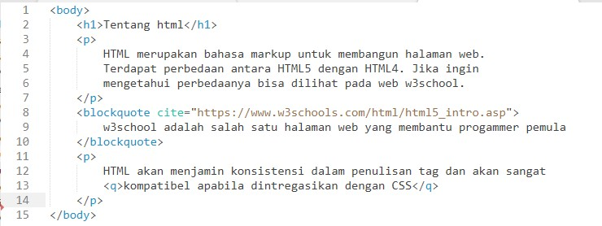

Membuat Kutipan
Tentang html
HTML merupakan bahasa markup untuk membangun halaman web.
Terdapat perbedaan antara HTML5 dengan HTML4. Jika ingin
mengetahui perbedaanya bisa dilihat pada web w3school.
w3school adalah salah satu halaman web yang membantu progammer pemula
HTML akan menjamin konsistensi dalam penulisan tag dan akan sangat
kompatibel apabila dintregasikan dengan CSS
Analisis: ketika kita menggunakan tab blockquote, maka kutipan yang kita buat akan memisah dari kalimat sebelumnya. Fungsi dari blockquote sendiri memang untuk membuat kutipan yang panjang. Sebaliknya pada inline atau dalam coding tag q, adalah tag untuk membuat sebuah kutipan yang pendek, maka dari itu inline atau tag q tidak akan menyatu dengan kalimat sebelumnya
